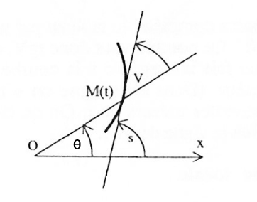

Trèfle de Habenicht
Courbes polaires · Mathématiques — Antoine Géré
Nous allons étudier le trèfle de Habenicht, défini par son équation polaire :
\[\rho = 1 + \cos\left(n\theta\right) + \sin^2\left(n\theta\right)\]L'objectif est de tracer le trèfle de Habenicht pour \(n = 3\) ou \(n = 4\), selon la chance espérée !
Domaine d'étude
Le domaine de définition est \(D_1 = \mathbb{R}\). On remarque d'abord que \(\rho\) est périodique de période \(\tfrac{\pi}{2}\). En effet :
\[\begin{aligned} \rho\!\left(\theta+\tfrac{\pi}{2}\right) &= 1 + \cos\left(4\theta + 2\pi\right) + \sin^2\left(4\theta + 2\pi\right) \\ &= 1 + \cos\left(4\theta\right) + \sin^2\left(4\theta\right) = \rho(\theta). \end{aligned}\]On peut donc limiter l'étude à un intervalle d'amplitude \(\tfrac{\pi}{2}\), puis compléter par autant de rotations que nécessaire pour reconstituer la courbe :
\[D_2 = \left[-\tfrac{\pi}{4},\ \tfrac{\pi}{4}\right].\]De plus, \(\rho\) est paire en \(\theta\), c'est-à-dire \(\rho(-\theta) = \rho(\theta)\). Les points \(M_1(\rho,\theta)\) et \(M_2(\rho,-\theta)\) sont alors symétriques par rapport à l'axe des abscisses. On peut ainsi limiter l'étude à :
\[D_3 = \left[0,\ \tfrac{\pi}{4}\right].\]Calcul de ρ′
On calcule la dérivée de \(\rho\) :
\[\rho^\prime(\theta) = 4\sin(4\theta)\left(2\cos(4\theta) - 1\right).\]Elle s'annule sur \(D_3\) aux points :
\[\rho^\prime(\theta) = 0 \iff \theta \in \left\{\,0,\ \tfrac{\pi}{12},\ \tfrac{\pi}{4}\,\right\}.\]Étude des variations de ρ
Sur \(D_3 = \left[0,\tfrac{\pi}{4}\right]\), le signe de \(\rho^\prime\) donne le tableau de variation suivant :
| Intervalle | \(\left[0,\ \tfrac{\pi}{12}\right]\) | \(\left[\tfrac{\pi}{12},\ \tfrac{\pi}{4}\right]\) |
|---|---|---|
| Signe de \(\rho^\prime\) | \(+\) | \(-\) |
| Variation de \(\rho\) | ↗ de \(2\) à \(\tfrac{9}{4}\) | ↘ de \(\tfrac{9}{4}\) à \(0\) |
Ainsi \(\rho\) croît de \(2\) à \(\tfrac{9}{4}\) sur \(\left[0,\tfrac{\pi}{12}\right]\), atteint son maximum \(\tfrac{9}{4}\) en \(\tfrac{\pi}{12}\), puis décroît jusqu'à \(0\) en \(\tfrac{\pi}{4}\).
Étude des tangentes à la courbe
On étudie à présent les tangentes particulières en \(\theta \in \left\{0,\ \tfrac{\pi}{12},\ \tfrac{\pi}{4}\right\}\). C'est l'angle \(V\) entre la tangente et le rayon vecteur \(\vec{OM}\) qui nous intéresse :

On dispose de la relation :
\[\tan\left(V\right) = \frac{\rho}{\rho^\prime}.\]D'où les comportements aux points remarquables :
\[\lim_{\theta \to 0} \tan(V) = +\infty, \qquad \lim_{\theta \to \frac{\pi}{12}} \tan(V) = +\infty, \qquad \lim_{\theta \to \frac{\pi}{4}} \tan(V) = 0.\]| Point | \(\rho\) | \(\theta\) | \(V\) |
|---|---|---|---|
| \(M_0\) | \(2\) | \(0\) | \(\tfrac{\pi}{2}\) |
| \(M_1\) | \(\tfrac{9}{4}\) | \(\tfrac{\pi}{12}\) | \(\tfrac{\pi}{12}\) |
| \(M_2\) | \(0\) | \(\tfrac{\pi}{4}\) | \(0\) |
Tracé
On trace enfin la courbe avec R, à l'aide de ggplot2 et de coordonnées cartésiennes \((x,y) = (\rho\cos\theta,\ \rho\sin\theta)\) :
library(ggplot2)
theta <- seq(0, 2*pi, length.out = 1000)
rho <- 1 + cos(4*theta) + sin(4*theta)^2
df <- data.frame(x = rho*cos(theta), y = rho*sin(theta))
ggplot(df, aes(x, y)) +
geom_path(colour = "#1b5e20", linewidth = 1.3) +
coord_equal() +
theme_minimal()En faisant varier le paramètre \(n\) de \(0\) à \(20\), on obtient toute une famille de trèfles — une animation réalisée avec gganimate :
Mise en forme par Antoine Géré.